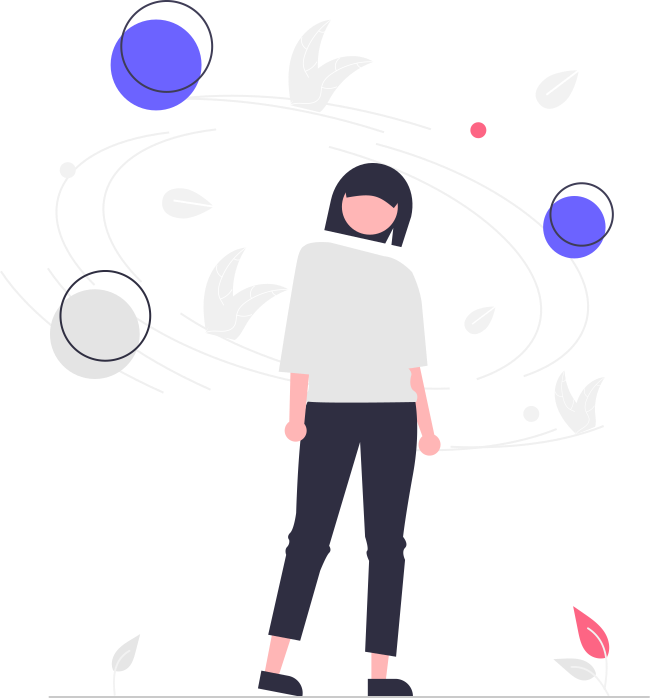

The Social Effect
Startseite
Psychologische Effekte ▼
Suchtverhalten und Abhängigkeit
Emotionale Auswirkungen
Reizüberflutung - Konzentrationsschwäche durch Soziale Netzwerke
Social Media Netzwerke ▼
Filter, Realität – und dazwischen du?
Mentale Gesundheit & Selbstwert
Tipps für den Umgang mit Social Media
Fake-News-Netze ▼
Lernmodule zur Fake-News-Erkennung
Social Bots
Verbreitung von Fake-News
Willkommen bei "The Social Effect"
Eine Plattform, die Wirkungen Sozialer Netzwerke beleuchtet.
Mehr erfahren
<

>